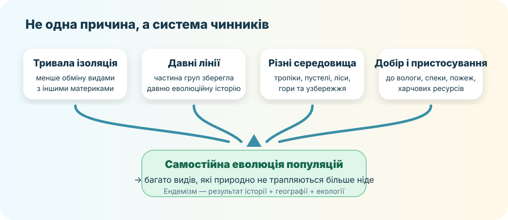
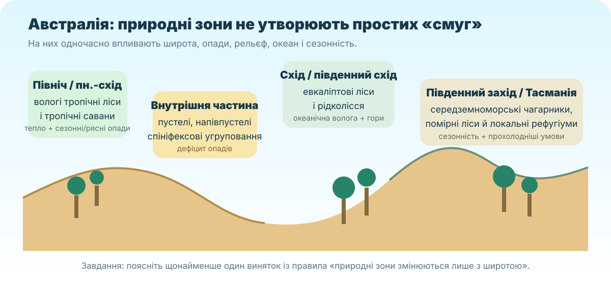

1. Просторовий старт: одна Австралія — різні середовища
OpenStreetMap. Масштабуйте й порівнюйте узбережжя, гори, внутрішні пустельні райони та острови.
Передбачте природні зони
Використайте знання з попереднього уроку про клімат Австралії.
2. Спершу дивимося: які ознаки повторюються?


Не називайте — пояснюйте
3. Числа як доказ: наскільки Австралія ендемічна?
За даними австралійського урядового відомства DCCEEW, дуже велика частка місцевих видів природно не трапляється більше ніде.
рослин — ендемічні
ссавців — ендемічні
птахів — ендемічні
рептилій — ендемічні
Джерело: Australian Government, DCCEEW — Protecting biodiversity. Відкрити джерело ↗
Що доводять ці числа?
Три терміни — не синоніми
Ендемік — природний ареал обмежений певною територією. Релікт — сучасний представник або популяція, що збереглася від колись ширше поширеної давньої біоти. Рідкісний вид — має малу чисельність/ареал, але не обов’язково є ендеміком чи реліктом.
4. Причинна лабораторія: чому виникає ендемізм?

Локальна схема для перевірки причинно-наслідкових зв’язків.
Натискайте на чинники
5. Працюємо як біогеографи: реальні записи про види
Atlas of Living Australia
ALA — національна відкрита інфраструктура біорізноманіття. Вона збирає мільйони записів спостережень і дозволяє зіставляти ареали видів із кліматом, ґрунтами, рослинністю, пожежами та іншими шарами.
Відкрити ALA ↗ Дослідити місце ↗
IBRA: природні комплекси як система
Австралійська система IBRA виділяє 89 біорегіонів за спільними рисами клімату, геології, форм рельєфу, рослинності та видового складу.
6. Природні зони: перевіряємо попередній прогноз

7. Детектив пристосувань
Вид → середовище → обмеження
Контрприклад до стереотипу
Австралія — не суцільна пустеля і не «континент лише сумчастих». Тут є яйцекладні ссавці, сумчасті, плацентарні ссавці, величезне різноманіття рептилій, птахів, безхребетних і рослин.
8. Коротке відеоспостереження
Australian Animals Guide — огляд австралійських тварин. Використовуйте відео як джерело прикладів, а причинні пояснення перевіряйте на картах і в ALA.
Дивимося не заради назв
9. Тепер — теорія
Перед відкриттям сформулюйте попередній висновок: чому Австралія має так багато ендемічних видів і чому її природні зони неоднакові?
Коротка теоретична модель
Ендемізм Австралії не має єдиної причини. Після розпаду Гондвани та тривалої географічної ізоляції багато популяцій еволюціонували окремо. На їхню подальшу історію впливали аридизація материка, гірські й прибережні рефугіуми, пожежні режими та різні екологічні ніші. Саме поєднання історії й середовища пояснює високу частку ендеміків.
Сумчасті та однопрохідні — не «недорозвинені» форми. Це сучасні еволюційні лінії зі своїми комплексами адаптацій. Качкодзьоб і єхидни — однопрохідні; кенгуру, коала, вомбати — сумчасті.
Природні зони пов’язані з кліматом, але не визначаються лише широтою. На північному сході волога й рельєф підтримують тропічні ліси; на півночі поширені савани; у центрі домінують пустельні та напівпустельні комплекси; на сході та південному сході — евкаліптові ліси й рідколісся; на південному заході — середземноморські чагарники з дуже високим флористичним ендемізмом.
10. CER: аргумент на доказах
Питання: «Тривала ізоляція — головна, але не достатня причина унікальності органічного світу Австралії». Підтвердьте або спростуйте.
11. Домашня робота
§29 + доказове міні-досьє
Опрацюйте §29 підручника Гільберг Т. Г., Довгань А. І., Совенко В. В. «Географія. 7 клас», Генеза, 2024.
Міні-досьє виду
Оберіть один ендемічний вид Австралії. Додайте: карту ареалу з ALA, природний комплекс, 2 пристосування, 1 сучасну загрозу та 1 доказ із надійного джерела.
12. Тест / 10
Спочатку ідентифікація
Тест заблокований, доки не заповнено всі три поля.
Джерела для перевірки
DCCEEW — biodiversity · IBRA · Atlas of Living Australia · OpenStreetMap